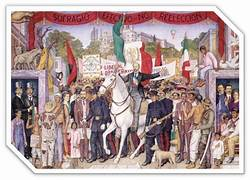
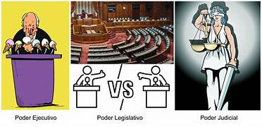

Introducción
El Estado es una forma de organización política que surge cuando una sociedad establece un sistema de gobierno, leyes e instituciones para regular la vida colectiva. La conformación del Estado es un proceso histórico que implica luchas sociales, acuerdos políticos y cambios constitucionales.
Desde la antigüedad, las sociedades han buscado formas de organización que garanticen seguridad, justicia y estabilidad. Con el tiempo, estas formas evolucionaron hasta dar origen al Estado moderno.
Elementos del Estado
Para que un Estado exista como tal, debe contar con cuatro elementos fundamentales que lo definen y distinguen de otras formas de organización social o política.
La ausencia de cualquiera de estos elementos impide que se pueda hablar de un Estado en sentido estricto, ya que todos son indispensables para su funcionamiento y reconocimiento.
- Territorio: Espacio físico delimitado.
- Población: Habitantes del territorio.
- Gobierno: Autoridad que dirige y administra.
- Soberanía: Capacidad de tomar decisiones sin depender de otro país.

Figura 1: Elementos fundamentales del Estado

Figura 2: Funciones principales del Estado
Funciones del Estado
El Estado no solo existe como estructura, sino que cumple funciones concretas orientadas al bienestar y la organización de la sociedad. Estas funciones justifican su existencia y legitiman su autoridad.
- Establecer leyes.
- Proporcionar seguridad.
- Administrar justicia.
- Garantizar servicios públicos (educación, salud, infraestructura).
Ejemplo práctico
Cuando el gobierno organiza elecciones para elegir representantes, está ejerciendo su función política dentro del Estado.
Desarrollo del Tema
La conformación del Estado es el resultado de un largo proceso histórico en el que las sociedades fueron creando instituciones cada vez más complejas para resolver sus necesidades de organización, seguridad y justicia.
El origen histórico del Estado
Las primeras formas de organización política surgieron en la antigüedad con las ciudades-Estado griegas y los imperios orientales. Con el paso del tiempo y las transformaciones sociales, económicas y culturales, estas estructuras evolucionaron hasta dar lugar al Estado moderno tal como lo conocemos hoy, caracterizado por constituciones, leyes escritas e instituciones formales.
La soberanía como elemento clave
La soberanía es uno de los elementos más importantes del Estado, pues define su capacidad de autogobernarse y tomar decisiones sin interferencia externa. Un Estado soberano puede establecer sus propias leyes, firmar tratados internacionales y ejercer control sobre su territorio y población, lo que lo diferencia de otras formas de organización política subordinadas a un poder externo.
Ejemplos Visuales
Ejemplo 1: El territorio del Estado
Ejemplo 2: El gobierno como autoridad
Ejemplo 3: Servicios públicos del Estado
Conclusión
La conformación del Estado es un proceso histórico complejo que refleja la necesidad de las sociedades de organizarse para garantizar seguridad, justicia y bienestar colectivo. Sus cuatro elementos —territorio, población, gobierno y soberanía— son inseparables y definen su existencia.
Comprender cómo se conforma el Estado y cuáles son sus funciones permite entender mejor el papel que juega en nuestra vida cotidiana y la importancia de participar activamente en la vida pública como ciudadanos.